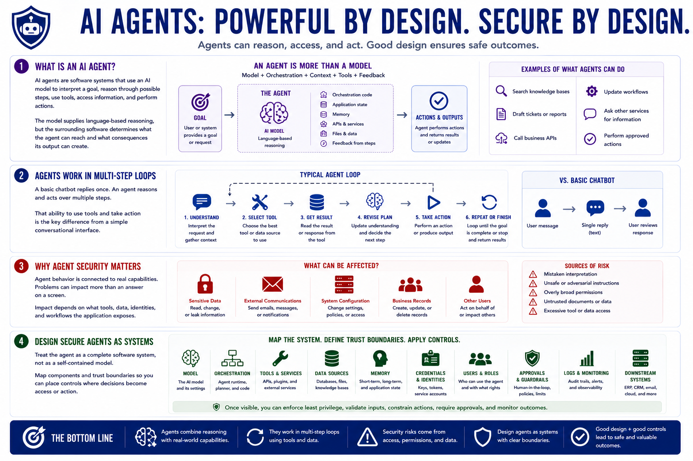

Securing AI Agents
What Are AI Agents?
Connecting to LMS... Progress: in progress
Version 1.0 | Date: 2026-06-21
This course provides educational information about securing AI agent systems. It is not legal advice, product-specific implementation guidance, or offensive security training.

Narration
AI agents are software systems that use an AI model to interpret a goal, reason through possible steps, use tools, access information, and perform actions. An agent may combine a model with orchestration code, application state, memory, APIs, files, and feedback from earlier steps. The model supplies language-based reasoning, but the surrounding software determines what the agent can reach and what consequences its output can create.
A basic chatbot normally responds to one message with text that a person reviews. An agent may work through a multi-step loop: understand a request, select a tool, read a result, revise a plan, and take another action. It might search a knowledge base, draft a ticket, call a business API, update a workflow, or ask another service for information. That ability to act is the important difference from a simple conversational interface.
Agent security matters because model behavior is connected to real capabilities. A mistaken interpretation, unsafe instruction, overly broad permission, or untrusted document can influence more than an answer on a screen. It may affect sensitive data, external communications, system configuration, business records, or other users. The impact depends on what tools, data, identities, and workflows the application exposes.
A secure design treats the agent as a complete software system rather than as a self-contained model. Teams should map the model, orchestration layer, tools, data sources, memory, credentials, users, approvals, logs, and downstream systems. Once those components and trust boundaries are visible, developers and security teams can place controls where decisions become access or action.